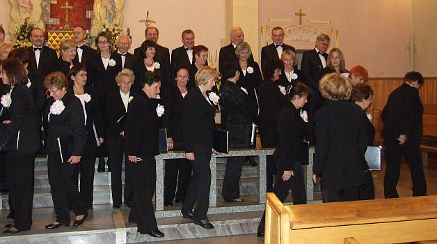

do aktualności
do aktualności2013-09-30
Spotykamy się na próbie o godz. 16.30.
Panowie szybko i sprawnie ustawiają sprzęt dla naszej akompaniatorki.
Ustawiamy się, aby prześpiewać po kawałeczku utwory na koncert.
Jeszcze ustawienie, wejście i zejście. Wszystko ma być elegancko i sprawnie, a więc prawa strona
i lewa strona chóru.
Koniec próby. Chwila odpoczynku
i idziemy na chór. Dzisiaj również oprawiamy muzycznie mszę.
Msza się skończyła. Zaczynamy koncert, prowadzenie Anna Kozłowska.
Teraz krótki występ kwartetu smyczkowego ARCHI. Ale one grają!
Chóry mogą troszkę odpocząć.
No i już koniec wspaniałego koncertu.
Wracają chóry na drugą część koncertu.
Koncert był bardzo udany, co widać po naszych uśmiechach.
Schodzimy . . .

i do domu wypoczywać, bo jutro kolejny koncert.
do aktualności


 Prowadzenie strony: Małgorzata Wysocka-Cebula
Prowadzenie strony: Małgorzata Wysocka-Cebula